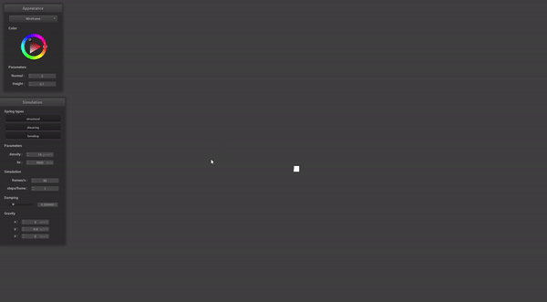
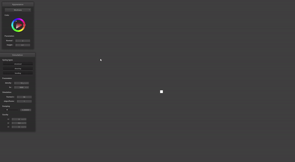
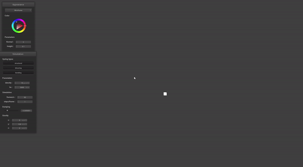

We have completed a implementation of smoke diffusion (i.e no velocity field) in C++ using clothsim as the base. Our smoke diffusion model is mostly based off Jos Stam's Paper on Real-Time Fluid Dynamics. Our infrastrucutre consists of an $x = N$ by $y = N$ by $z = N$ grid which will consists of densities of material, in this case, smoke. The intuition is as follows: for a single cell, we have flow out and flow in. Assuming equal flow in from all sources and some diffusion rate $d \in [0, 1]$, we have: $$x_t = (1 - d)x_{t - 1} + (\frac{d}{6}\sum_{z \in N(x)}z_{t-1})$$ This simply says $dx_{t - 1}$ density will flow out of the current cell, and that for any neighbor $z$, $\frac{z_{t - 1}}{6}$ density will come in. To give the illusion (without velocity field forces) that the smoke travels upward, we change the flow such that we get much more flow in from the bottom cell. Our flow equation thus becomes: $$x_t = (1 - d)x_{t - 1} + \frac{d}{8}(x_{front} + x_{back} + x_{left} + x_{right} + x_{above} + 3x_{below})$$ In our current implementation, we have a smoke source follow a the parametric function of a circle to emphasise the 3D effect. The smoke source is defined as $x = c_x + r\cos t, y = c_y, z = c_z + r\sin t$, where $t$ is the timestep of the simulator.
Below are different renderings of the smoke diffusion with different diffusion rates $d$
|

|

|

|
Relative to our plan, we somewhat went backwards. Instead of doing the advect step, we found it was easiest to do the diffusion step first, since the advect step required having a velocity field. Regardless of our out of ordering scheduling, we are happy with our progress, as we have an infrastucture set up in clothsim, as well as finishing the diffusion step of the smoke simulation. However, we didn't write any of our code in OpenGL, and have only written code in C++ to hit the ground running. Originally, we stated that we were going to write our project in Python, and use libraries such as pyopenGL and pytorch. However, we found that rendering python using a grid based method (such as in pygame) can be difficult and slow. Thus, we opted with using clothsim as the base and doing everything in C++.
Most of our code right now runs using for loops, using only CPU computations. To make it much faster, we plan to use GPU computations and migrate our work to OpenGL. After refactoring, we plan to add a 3 dimensional velocity field that will allow for more dynamic smoke simulations. The interactivity of the velocity field is yet to be determined (perhaps by mouse or by a parametric function across timesteps), but with the velocity field, we will be able to implement the next advect step in 3-dimensions. Next is the dynamic velocity field, allow velocity to evolve over time through self-advection or from different forces, which will allow for more realistic smoke simulations. After this, since Jos Stam's fluid solver is arbitrary, We plan to have different shaders to represent different fluild like simulations, such as fire.